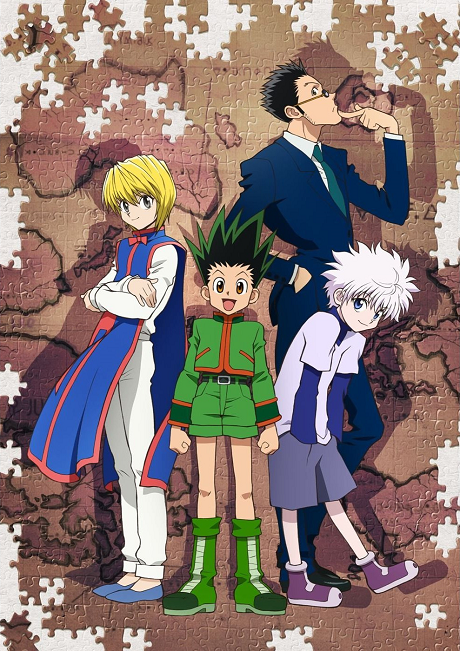
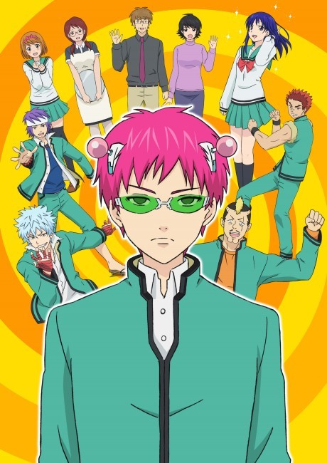

In my free time, I enjoy playing games, watching anime, and going on walks. I love being surrounded by nature, especially
after working on assignments for long hours in the library. Some of my favorite animes are Jujutsu Kaisen,
Tokyo Ghoul, Hunter x Hunter, Solo Leveling, Saiki K, and Asobi Asboase.

